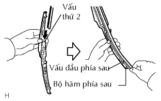

CAO SU GẠT NƯỚC PHÍA SAU > LẮP RÁP |
| 1. LẮP CAO SU GẠT NƯỚC PHÍA SAU |
Lắp lưỡi thép đỡ gạt nước như trong hình vẽ.
|  |
Cắm lưỡi gạt nước từ đầu trước của gạt nước đến đầu sau qua khóa cài thứ hai.
Sau khi ấn cao su gạt nước qua khóa cài phía sau, để cho nó nhô ra khỏi miếng hãm phía sau.
Trượt cao su gạt nước qua khóa cài đầu trước.
| 2. LẮP LƯỠI GẠT NƯỚC PHÍA SAU |
Kéo lưỡi gạt nước thẳng về phía phải của xe để lắp nó vào tay gạt mưa.